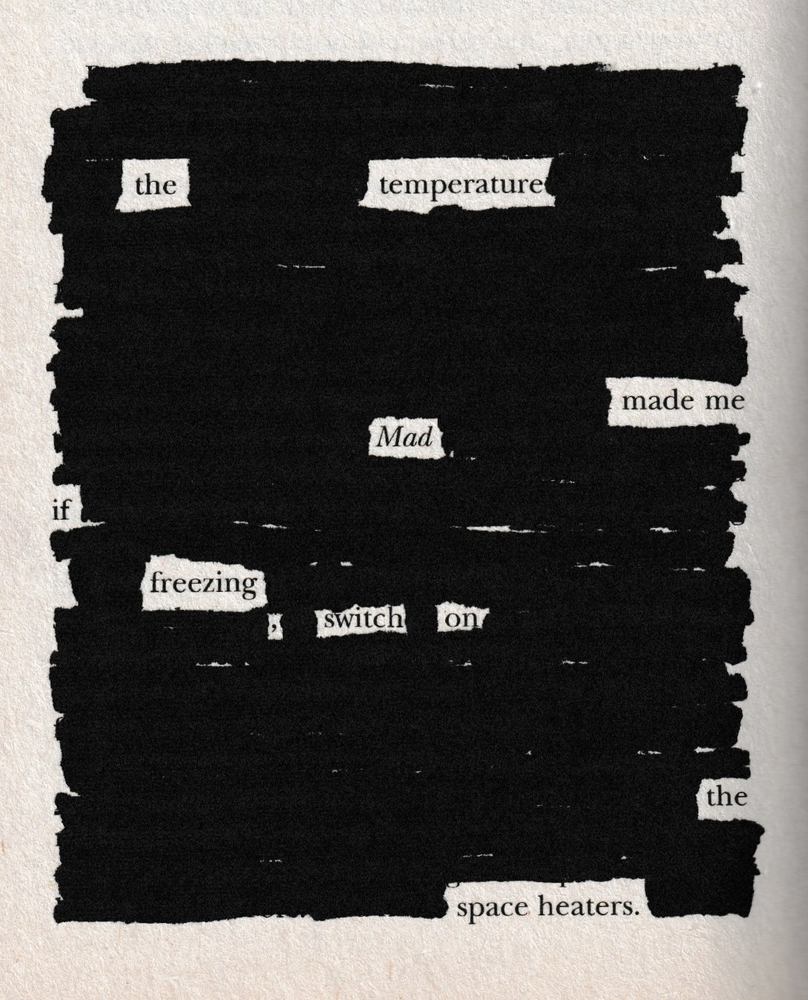

Space Heaters
A blackout poem
I decided to try out blackout poetry for the first time using a book that my mother didn't enjoy. It definitely feels weird to go over a book with permanent marker, but I think this page is her favorite now.
I decided to try out blackout poetry for the first time using a book that my mother didn't enjoy. It definitely feels weird to go over a book with permanent marker, but I think this page is her favorite now.